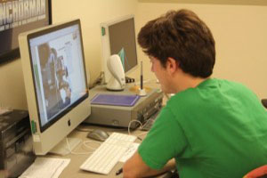
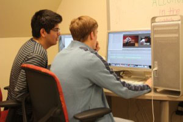
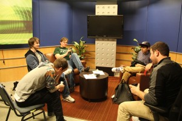
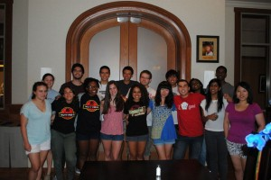
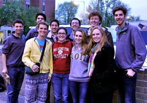
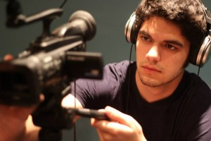

We're easy. Just turn us on.
Programming
WUTV tries to create an environment in which any individual looking to put on a campus television show can walk-in, get approved, and get started. Striving to help Wash. U. students and campus groups, we go beyond to teach and assist people with the technical aspects of film production. If you are interested in creating a television show or even just getting involved in an established show, with minimal training you can be on your way to success.
What makes a WUTV show?
A WUTV show is defined as any WUTV member's production that was pitched at a meeting or that was created at least in part by WUTV members. While WUTV reserves the right to deny to producer or distrubute any production that is pitched to us, we have very few rules for what you can do with us! Even if you haven't seen something like your idea on WUTV, we'd love to help you turn your idea into a video.
Current shows Available for viewing at our YouTube page
      Adventure SeriesWUTV Cribz
CrossCut Productions
The Dating Game
In the Spotlight
KWUR Stack Sessions
Phantom Limb Music
Professor and a Puppet
Wash U News
WU's Line is it Anyway?
WUTV Microfilms
Past shows
Coeds In BedsPaws 'n' Go Chopped
WU Safari